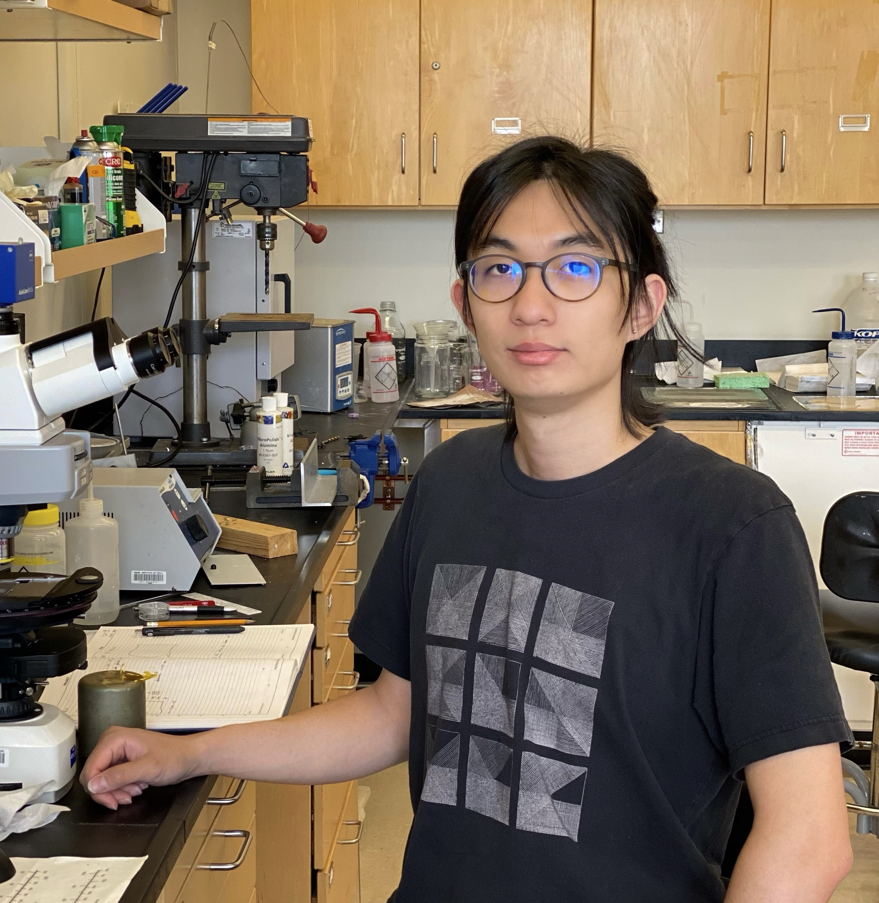

Spring 2022, MIT.


zifanlin@mit.edu
About Me
Some text goes here.
Publications
H2-dominated Atmosphere as an Indicator of Second-generation Rocky White Dwarf Exoplanets
Zifan Lin, Sara Seager, Sukrit Ranjan, Thea Kozakis, and Lisa Kaltenegger
ApJ Letters
[ADS] [arXiv]
Zifan Lin, Sara Seager, Sukrit Ranjan, Thea Kozakis, and Lisa Kaltenegger
ApJ Letters
[ADS] [arXiv]
Finding Signs of Life in Transits: High-resolution Transmission Spectra of Earth-like Planets around FGKM Host Stars
Lisa Kaltenegger and Zifan Lin
ApJ Letters
[ADS] [arXiv] [data]
Lisa Kaltenegger and Zifan Lin
ApJ Letters
[ADS] [arXiv] [data]
Conference Talks
Using Twitter Data to Understand Public Perceptions of Approved versus Off-label Use for COVID-19-related Medications.
Hua, Yining; Hang Jiang, Shixu Lin, Jie Yang, Plasek Joseph, David Bates, and Li Zhou.
AMIA Annual Symposium 2022, Washington, D.C. Poster presentation.
Hua, Yining; Hang Jiang, Shixu Lin, Jie Yang, Plasek Joseph, David Bates, and Li Zhou.
AMIA Annual Symposium 2022, Washington, D.C. Poster presentation.
Identifying Transgender and Gender Diverse Patients in Electronic Health Records
Hua, Yining; Liqin Wang, Vi Nguyen, David Bates, Dinah Foer, and Li Zhou.
AMIA Annual Symposium 2022, Washington, D.C. Podium presentation.
Hua, Yining; Liqin Wang, Vi Nguyen, David Bates, Dinah Foer, and Li Zhou.
AMIA Annual Symposium 2022, Washington, D.C. Podium presentation.
Quantifying the bilingual (dis)advantage in vocabulary acquisition.
Hua, Yining; Joshua K. Hartshorne.
ABC 2021, Hong Kong, China. Abstract presentation.
[Abstract] [Slides]
Hua, Yining; Joshua K. Hartshorne.
ABC 2021, Hong Kong, China. Abstract presentation.
[Abstract] [Slides]
Miscellaneous
Examining the Impact of QuickReads Technology and Print Formats on Fluency, Comprehension, and Vocabulary Development for Elementary Students.
Summarized by Yining Hua, directed by Luke W. Miratrix
JREE 2021
[Summerization]
Summarized by Yining Hua, directed by Luke W. Miratrix
JREE 2021
[Summerization]
Academic Timeline
(RA = Research Assistant; TA = Teaching Assistant)
Master of Biomedical Informatics, Harvard Medical School, Boston, MA
09/2021 - Present
- Clinical RA II: Department of Anesthesia, Beth Israel Deaconess Medical Center [06/2022 - Present]
- RA: Department of Dermatology, Mass General Hospital [04/2022 - Present]
- RA: Department of Medicine, Brigham Women's Hospital [10/2021 - Present]
- Teaching Fellow: S-043/Stat-151: Multilevel and Longitudinal Models [Summer 2021]
- RA: Language Learning Lab @Boston College with Joshua Hartshorn [01/2020 - 12/2021]
- RA: Harvard Institute of Applied Sciences, with Chris Tanner [Spring 2021]
- Research Intern: Mass General Hospital with Jennifer Haas [Summer & Fall 2020]
- RA: Harvard Medical School with Tianxi Cai [Summer & Fall 2020]
- Teacher of Health Informatics: The MIT Educational Studies Program [Fall 2020]
- TA: Data Science in Action: Machine Learning for Self-Driving Cars [Summer 2020]
- RA: Smith NLP group, with Jamie Macbeth [01/2019 - 12/2020]
- STEM Mentor: : The AEMES Scholars program [Fall 2020]
- Academic Coach Fellow: Project Coach [Spring 2020]
- TA and Grader: PHY 215: Light, Relativity, and Quantum Physics [Spring 2020]
- Tutor and Grader: PHY 210: Mathematical Methods of Physical Sciences and Engineering [Fall 2019]
Service and Leadership
- Peer Reviewer: International Journal of Medical Informatics (IJMI) July, 2022
- Peer Reviewer: The 29th International Conference on Computational Linguistics (COLING), 2022
- Peer Reviewer: American Medical Informatics Association (AMIA) Annual Symposium 2022
- Peer Reviewer: International Journal of Medical Informatics (IJMI) March, 2022
- Co-chair: Department of Seminar, the Harvard Chinese Students and Scholars Association, 2021-2022
- Organizer and Moderator: Forum of Society and Culture, Harvard China Alumni Conference 2022
- Ph.D. Debate moderator: AI Time, Tsinghua University, China, 11/2020 - 05/2021
- Fellow: Department of Seminar, the Harvard Chinese Students and Scholars Association, 2020-2021
- Volunteer: APS Conferences for Undergraduate Women in Physics, UMass Amherst, 01/2019